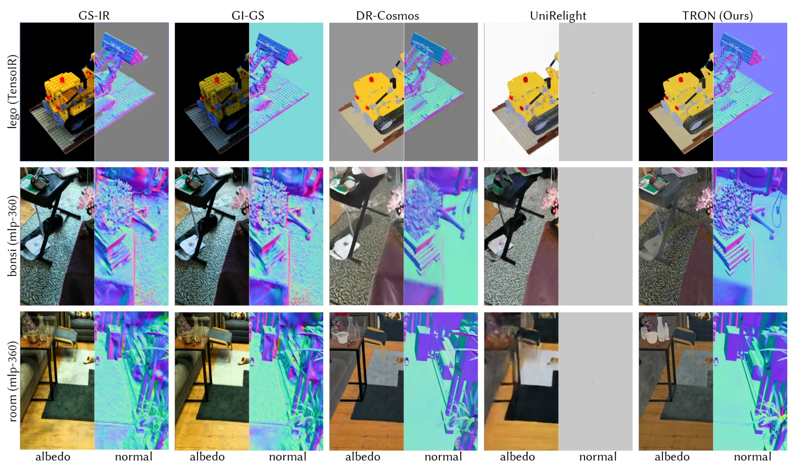
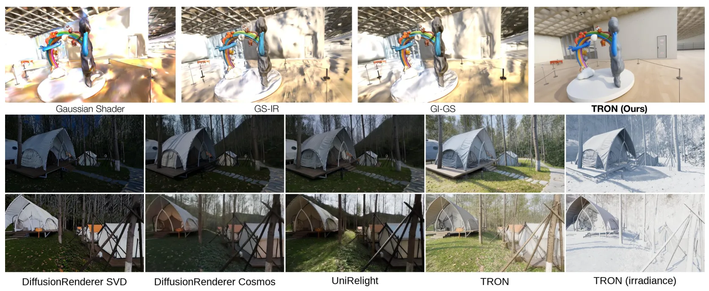
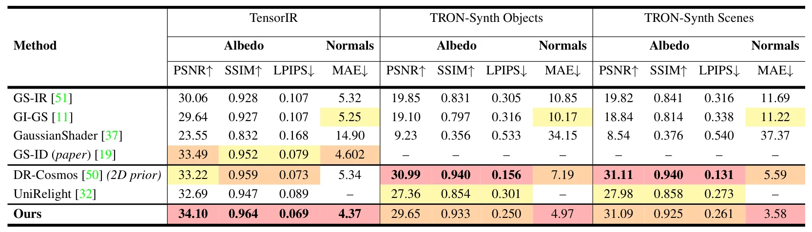
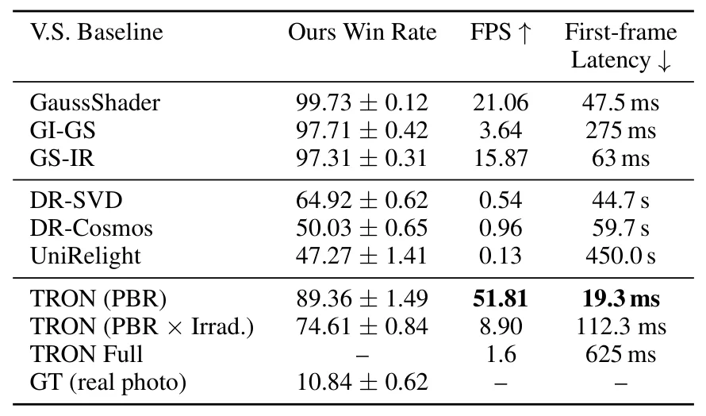
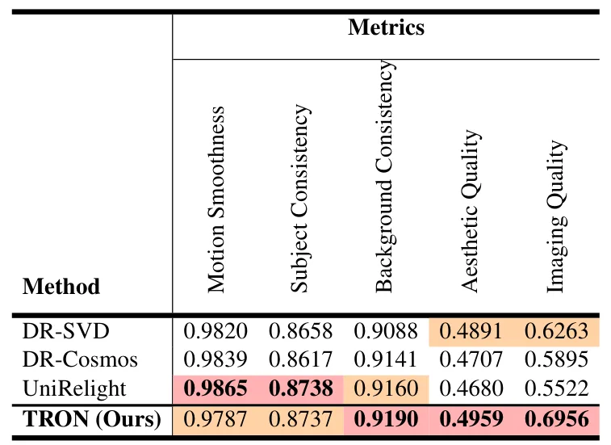

TRON：用射线追踪编排 3D Gaussian 重建的神经渲染器TRON: Tracing Rays to Orchestrate a Neural Renderer for 3D Gaussian Reconstructions
对 3DGS 数字孪生、仿真和数据生成很有价值；不是定位算法，后续需看与真实 SLAM/COLMAP 资产的接口。
一句话工作总结
TRON 把 Gaussian ray tracing 作为显式 3D scaffold，再用神经渲染实现可控重光照、对象插入和材质编辑。
摘要
TRON 是一个结合 3D Gaussian ray tracing 与神经渲染的框架，可在新光照、动态物体运动、对象插入和材质编辑下对真实 3D 场景进行真实且可控的渲染。仅依赖 Gaussian 表示 PBR 的方法常因重建几何、材质估计和光传输估计误差而难以真实重光照；而神经渲染方法又缺少显式场景表示，限制了细粒度交互编辑。TRON 使用来自学习式逆渲染模型的 intrinsic decomposition priors 正则化 Gaussian field 的材质属性，并将 ray tracer 改造为 radiometric guidance 而非最终像素输出。该结构化 3D scaffold 再交给轻量神经渲染器弥合着色模型约束估计与照片级输出之间的域差。作者使用包含 2.1M synthetic 与真实重建 frames 的数据进行大规模预训练和目标微调，报告其在 realism、可编辑性和速度上优于相关方法。
We introduce TRON, a rendering framework that combines 3D Gaussian ray tracing with neural rendering to enable realistic and controllable rendering of real-world 3D scenes under novel lighting, dynamic object motion, object insertion, and material editing. Prior approaches that rely solely on physically based rendering (PBR) of Gaussian representations struggle to achieve realistic relighting due to imperfections in reconstructed geometry, material estimates, and light transport estimation. At the same time, neural rendering methods often lack an explicit scene representation, limiting their ability to support interactive editing with fine-grained manipulation. TRON bridges these two paradigms. We use intrinsic decomposition priors from a learned inverse rendering model to regularize the material properties of a Gaussian field, and repurpose a ray tracer to provide radiometric guidance rather than final pixels. By treating this output as a structured 3D scaffold, we empower a lightweight neural renderer to bridge the domain gap between shading-model constrained estimates and photorealistic output. Our key insight is that the combination of explicit 3D knowledge with robust material priors provides speed and controllability, while neural rendering enables the synthesis of photorealistic images. To support real-world scenarios, we train our neural renderer with a multi-stage strategy consisting of large-scale pretraining and targeted fine-tuning on a newly constructed dataset of 2.1M rendered synthetic and real-world frames from 3D reconstructions. TRON outperforms Gaussian-based relighting methods in realism, and prior neural renderers in editability and speed. To the best of our knowledge, TRON is the first method to enable practical interactive applications in captured 3D environments, offering realistic appearance under dynamic geometric, lighting and material conditions.
中文解读摘录
- 作者：Matthew Cong, Francis Williams, Jonathan Swartz, Mark Harris, Sanja Fidler, Ken Museth；类别：cs.CV / cs.DC / cs.GR / cs.LG；发布日期：2026-06-10；备注：14 pages, 6 tables, 2 figures；采集 score=13
- 核心问题：3DGS 在真实大场景重建中受单 GPU 显存与算力限制，难以扩大到城市级、街景级细节，同时多卡分布式实现通常要求模型代码显式处理跨设备通信。
- 方法亮点：提出一个 PyTorch backend，把 Gaussian 参数和 splatting operators 通过 CUDA unified memory 与 NVLink 分布到多 GPU；分布发生在 operator 层，模型代码可把多张 GPU 视作聚合 PyTorch device，不需要手写跨设备通信。
- 结果信号：展示了包含 超过 10 亿 Gaussian splats 的城市级重建，数量超过当前 SOTA 25 倍以上，并保持街景级细节。
- 关注价值：这更像 3DGS 系统/基础设施论文，不是 SLAM 算法；但对大尺度机器人地图、城市数字孪生和长序列 Nerfstudio/3DGS 重建非常关键。后续应关注显存分页、NVLink 依赖、训练/渲染吞吐，以及是否能接入已有 COLMAP/SLAM 位姿和地图分块流程。
图表/页面预览

{kind=link}

{kind=link}

{kind=link}

{kind=link}

{kind=link}
